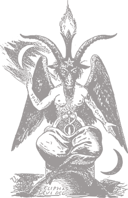

The Order of Nine Angels

Many believe Satanism is evil and only those who wish to harm others worship the devil. However, it is widely misunderstood.Many Satanists practice beliefs that align with other's moral values and that Satanism is about living life well and not that Satan is an actual being to worship. There is a wide spectrum of satanic worship just the same as other religions. Most Satanist religions exist with new ideologies and are independent of the Abrahamic religions. We are not them. Do NOT confuse us with atheistic Satanism. These imposters have muddied the waters and ruined our true connection with Lucifer and do nothing but embrace the glamour ofSatanism.
We serve Satan to bring forth the Imperium and his true will. We are those who have chosen the left-hand path. The influence of the Judeo-Christian religion has had control of the reins for too long. It has permeated every aspect of our lives, our governments, our schools and homes. The most influential and prominent religion in our society today has the audacity to claim victim hood by the actions of others simply choosing to live their lives the way they wish. Preaching you that if you only give in to the will of god that you will be free. Free of the burden of loving who you wish or treating your body how you see fit. Religious zealots can be found on every corner boldly damning all to an eternity of torture and pain for sins they have themselves blindly commited. You can not let them win. You deserve to be free and loved. You deserve to take the left-handed path of Lucifer.

The Imperium can not be born through a world of Christ. The only way to ensure the eventual dissolution of the church and those who seek to destroy your happiness is to rebel to all they hold dear. You may not know that you are our kin, but we will gladly take you. Removed yourself from society. Hold up your arms and reign fiery chaos to the social cesspool they have built. Break every rule that has ever been created by man. Steal from all. Murder the supposed innocent that do not love our lord. Devour the flesh of those living and burn their screaming bodies to ashes. Bleed their loved ones of the oily chemicals pumping through their veins. Their lives are nothing and they are the inferior beings. Sacrifice their weak human flesh to the devil. Only through this may we grow a galactic empire worthy of Aamon to rule our galaxy in the name of Lucifer and his glory.
We are not created equal. Many minds are weak and not deserving of the love of Satan nor our own. Women have strayed far from their purpose. Their role as birth-givers and quenchers of our sexual desires has been rotted out by society. Through the ultimate sacrifice they can bring us one step closer to a humanity worthy of life. They will be captured by Agares and sacrificed for the dark one's will. Their offering will permit a thriving resurgence in the galactic colonies of Lucifier
No longer should you be shunned as a part of the oppressed. Challenge the oppressors, then twist their heavy hands. Cast them into the black waters. Watch as their weight drifts them to the bottom of the ocean depths where they suffocate as they have suffocated humanity. Join us my brother, follow Azazel and fall from god. Take up your weapons and sacrifice those you thought you loved to our lord. The magick bestowed upon you by Satan will serve you well if it is used to his will. Bring forth the Aeon of Fire! Take what you want and apologize for nothing.

